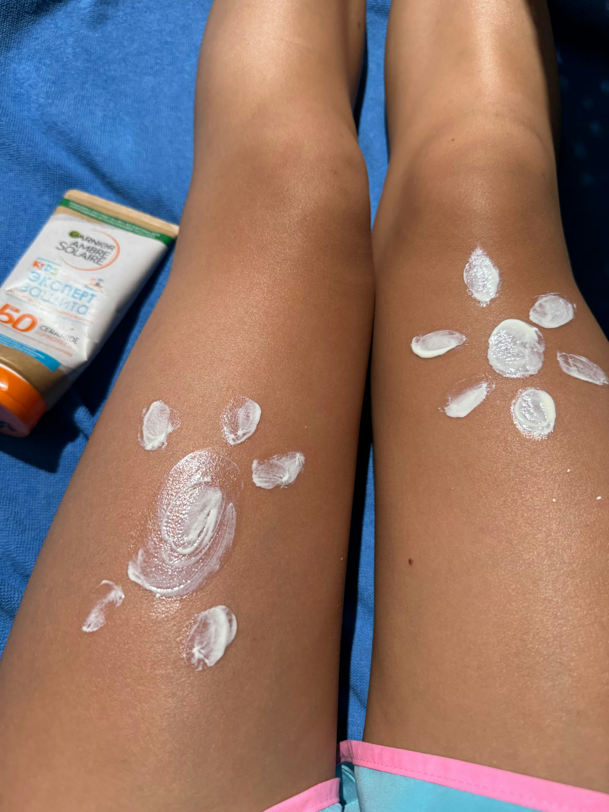
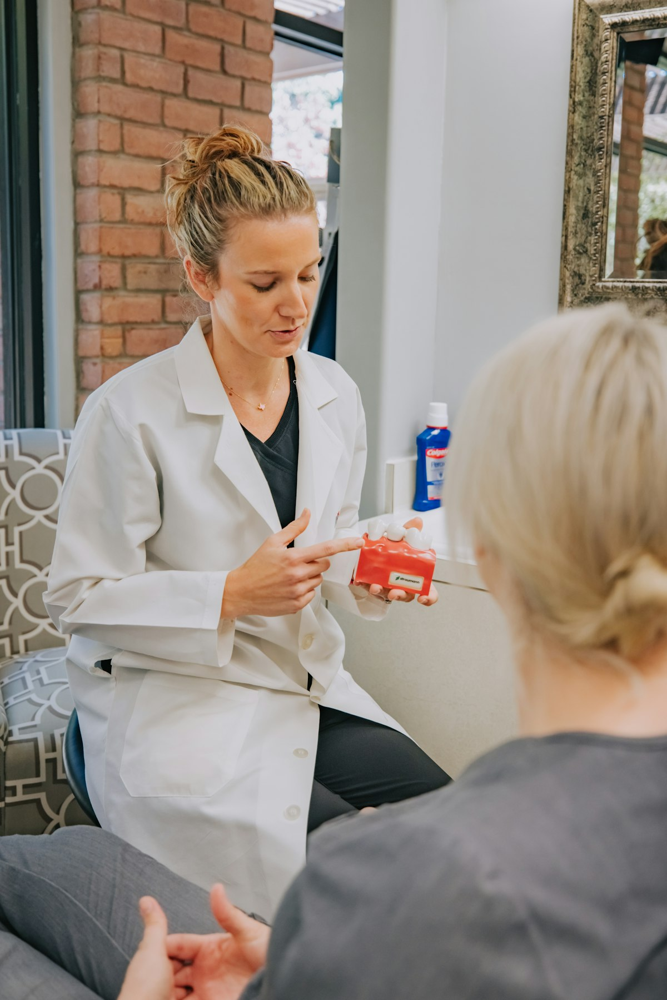
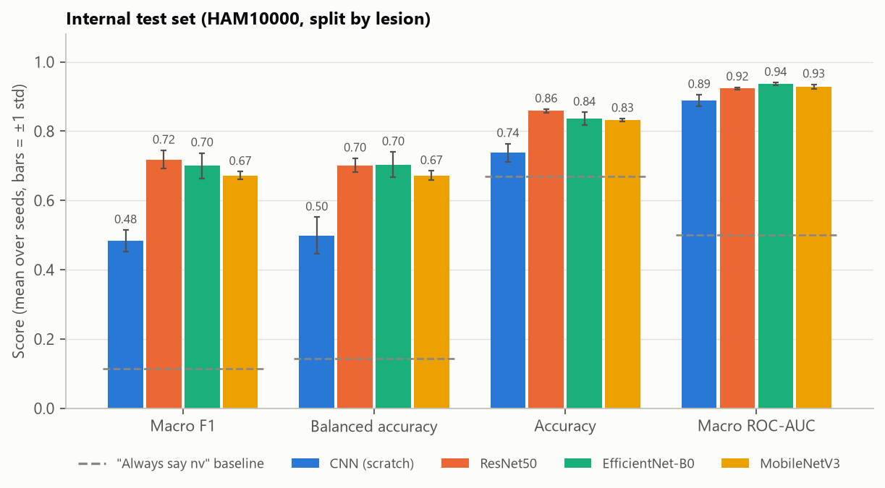
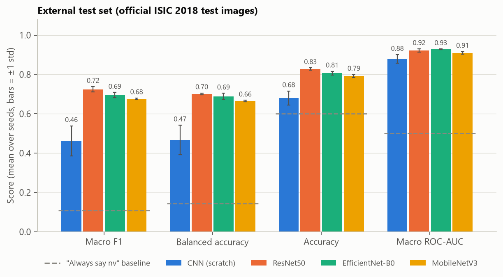
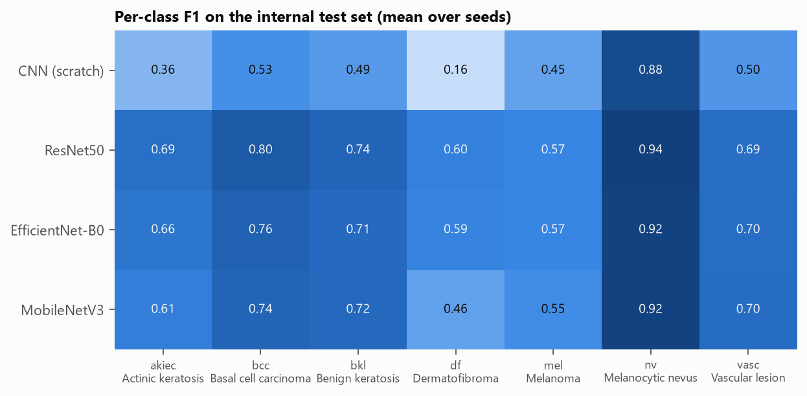
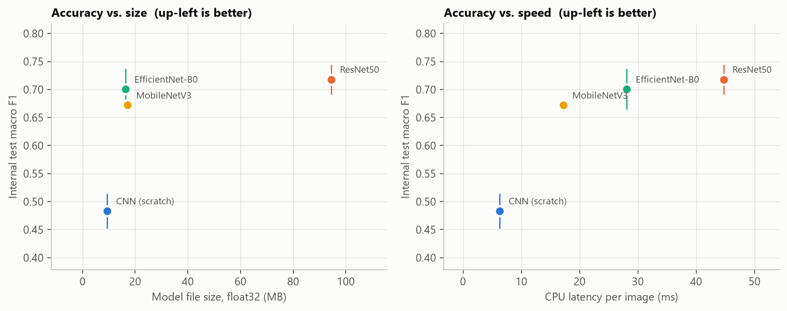
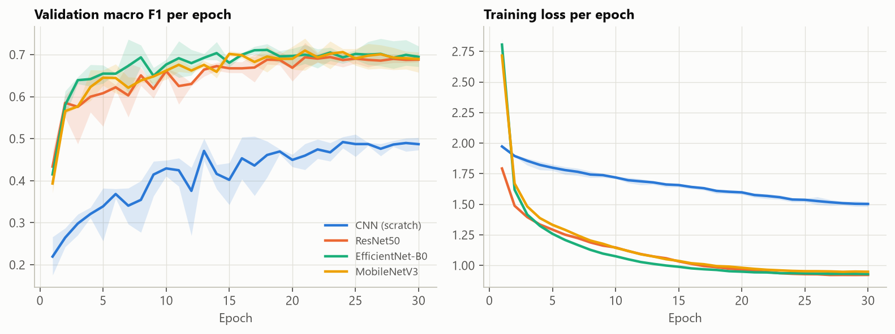

Everyday care
- Use SPF 30+ sunscreen and avoid sunburn and tanning beds.
- Once a month, look over your skin, including places you don't often see.
- Take photos of spots you want to keep an eye on, so you can notice changes.
Upload an image and four different AI models each give an indication of what the skin lesion may resemble. We'll explain the result in simple language and help you understand what to do next.
Your image is processed securely on this computer and is not used to identify you.
You choose what to upload, and you can remove an image or delete your account at any time.
No medical jargon. Every result explains what it means and what you can do next.
Images are checked on this computer, never saved and never sent over the internet.
An AI prediction can help you prepare, but only a healthcare professional can diagnose.
Four simple steps. You stay in control the whole time.
Add a close-up image of the skin spot you'd like to understand.
Four different AI models each look at it, in under a second.
See what most models think it matches, where they agree, and what that means.
Get simple, practical next steps, including when it's worth talking to a doctor.
Your account stays on this computer. It only keeps your username and a protected password.
The model comparison and privacy details below are open to everyone, no account needed.
You don't need to know what the condition is. Just upload the image and we'll guide you through the result.
Your image is checked on this computer and is not saved.
These are anonymous example images from a research dataset. Choosing one shows that image.
It takes about a second. You'll see what the image most closely matches, how many of the four AI models agree, and what you could do next.
Small everyday habits make a big difference, whatever your result.


A doctor can look at a skin spot properly, often with a skin magnifier, and tell you for sure. It's always fine to ask, even about a spot that turns out to be nothing.
It's worth booking a visit if a spot is new, changing, bleeding, itchy or simply worrying you.
We trained four AI models in exactly the same way and tested them on images they had never seen, where the correct answer had been confirmed by specialists.
Bold marks the best value in each column. Macro F1 is the main score (1.0 is perfect) because it treats all 7 types of skin spot equally. Plain accuracy can mislead here: 67% of the images are ordinary moles.





The dataset has 10,015 photos of only 7,470 skin spots. If photos of the same spot ended up in both training and testing, the AI could simply recognise them. So every spot is used for training or testing, never both.
Same images, same image size, same training steps and 30 rounds of training. Three of the models start from general image knowledge (ImageNet); the basic CNN starts from scratch.
Each model was trained several times with different random starting points, so one lucky run can't decide the winner.
These four models know 7 types of skin spots only. They have no "healthy skin" answer and no check that the image is a close-up of skin, so they always pick one of the 7. For everyday use, the separate SkinCheck site adds both.
Everything is on GitHub: this comparison and SkinCheck.
Here is exactly what happens to your image and your account.
The AI runs on this computer. Your image is never sent over the internet, and there is no cloud service or tracking.
It is held in memory only while it is being analysed, then discarded. It is never written to disk or stored in a database, and it is never used to train the AI. Automated tests check this.
Please crop out your face, tattoos, jewellery or anything else that could identify you. A close-up of just the skin spot works best anyway.
We store only your username, a protected (hashed) password and your sign-in session, all on this computer.